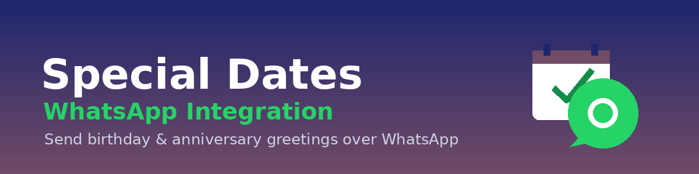

A free add-on for Special Dates that adds WhatsApp as a channel to every date type’s Communication Schedule — birthdays, anniversaries, renewals and any recurring date, delivered where your customers actually read.
Adds WhatsApp alongside Email and SMS in the Communication Schedule of each Special Date Type. Stack channels per step.
Uses Odoo’s native WhatsApp templates and your configured Meta Business API account — no extra connectors.
Installs automatically when both Special Dates and the WhatsApp module are present. Free companion app.
By XUBAX · xubax.com · soporte@xubax.com